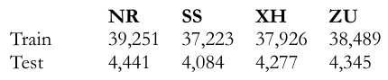
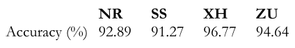

RAIL 2021Tafsiri ya mashine
Ugawaji wa Kanuni na Ulezi wa Mifano ya Kimatamshi ya Lugha Nne za Nguni Zisizo na Rasilimali Nyingi
Tafsiri ya mashine, haijakaguliwa na binadamu. Makala asili ndiyo toleo la rejeo; sentensi zilizopigiwa mstari ni zile ambazo ukaguzi wa kiotomatiki haukuwa na uhakika nazo.
Proceedings of the 2nd Workshop on Resources for African Indigenous Languages (RAIL 2021), Journal of the Digital Humanities Association of Southern Africa.
Tafsiri ya Ernst van Gassen (Arktos AI Lab), yenye leseni CC BY-SA 4.0 kama makala asili. Matumizi tena yanaruhusiwa kwa kutaja mwandishi; shiriki marekebisho kwa masharti yale yale. Waandishi asili hawajakagua wala kuidhinisha tafsiri hii.
Maandishi matupu ya kutumia tena, pamoja na leseni yake: Kiswahili · LESENI
Taasisi
Du Toit, Jakobus S.
Puttkammer, Martin J.
CTexT®, North-West University
Anwani za barua pepe zimeondolewa kwa sababu za faragha. Zinapatikana katika PDF asilia.
Muhtasari
Uchambuzi wa umbo unahusisha kuchunguza darasa la sintaksia la neno lakini pia unaweza kufikia uchambuzi wa sintaksia na uainishaji wa muundo wake wa msingi wa morfimu. Hii ni muhimu hasa kwa lugha zenye mfumo wa uandishi wa agglutinative ambapo maneno mengi ya lugha yanaonyeshwa kama neno moja la kisarufi. Katika makala hii, tunapendekeza mbinu inayotegemea kumbukumbu kwa ugawaji wa kikanuni kwa kutumia mbinu ya dirisha ili kurejesha mofimu zisizofupishwa ambazo zinatofautiana na umbo la uso la neno. Zaidi ya hayo, tunapendekeza kuchukulia uwekaji lebo wa kisintaksia wa mofimu kama kazi ya uwekaji lebo wa mfuatano, sawa na uwekaji lebo wa aina za maneno. Utaratibu huu hutumia muundo wa ndani wa mofimu ya neno kama muktadha wa ndani kwa njia ile ile ambayo sentensi inayozunguka neno hutumika katika kutofautisha sehemu yake ya usemi. Kazi zote mbili zinaundwa kwa namna tofauti lakini zinatekelezwa kwa mfuatano kwa kuingiza mofimu zilizotenganishwa za neno kwenye kazi ya uwekaji lebo wa kisintaksia. Wakati wa kutathminiwa kwa lugha nne za Nguni zilizo na rasilimali chache, mbinu iliyopendekezwa inapata usahihi wa jumla wa kati ya asilimia 82 na 92 ambayo inazidi vichambuzi vilivyotengenezwa hapo awali kwa lugha hizo.
Maneno Muhimu
uchambuzi mofolojia, canonical kugawanyika, syntactic morpheme tagging
1 Utangulizi
Upatikanaji wa rasilimali za lugha za ubora ni muhimu kwa utafiti wowote na juhudi za maendeleo katika uwanja wa Natural Language Processing (NLP). Kukusanya na kuunganisha rasilimali kama hizo kwa ujumla ni ghali na kunachukua muda, hasa katika kesi ya lugha zenye uhaba wa rasilimali kama ilivyo kwa lugha kumi kati ya lugha kumi na moja rasmi za Afrika Kusini. Ili kushughulikia uhaba huu na kuendeleza jitihada za utafiti na maendeleo katika eneo la teknolojia ya lugha za kibinadamu, serikali ya Afrika Kusini imeanzisha miundo kadhaa ya kisheria inayoendeleza matumizi na maendeleo ya lugha hizi na imedhamini miradi mbalimbali ya maendeleo kwa miongo miwili iliyopita. Mradi mmoja kama huo ulikuwa mradi wa Text wa Kituo cha Kitaifa cha Teknolojia ya Lugha ya Binadamu (Eiselen na Puttkammer 2014), ambao ulikusanya takriban tokeni 50,000, zilizoandikwa kwa maelezo ya aina za maneno (POS), lemma na uchanganuzi wa kimofolojia kwa lugha kumi kati ya lugha rasmi za Afrika Kusini. Vitambulishi vya POS, vitoa lemma na vitenganishi vya kimofolojia vinavyotegemea kanuni pia vilitengenezwa. Mradi wa ufuatiliaji ulipanua kazi hii kwa kutengeneza tokeni 50,000 za ziada zilizoandikwa na teknolojia zilizoboreshwa kwa lugha nne kati ya hizi, yaani isiNdebele (NR), Siswati (SS), isiXhosa (XH) na isiZulu (ZU). Katika makala hii, tunazingatia vichanganuzi vya kimofolojia ambavyo vilitengenezwa katika mradi wa ufuatiliaji.
Katika sehemu inayofuata tunatoa muhtasari mfupi wa mradi, ikifuatiwa na maelezo ya mgawanyiko wa kimorfolojia dhidi ya uchambuzi. Kisha (sehemu ya 4) tunawasilisha mbinu yetu ya ngazi mbili ya uchanganuzi wa kimofolojia na matokeo (sehemu ya 6). Hitimisho na kazi ya baadaye zinajadiliwa katika sehemu ya 7.
2 Usuli
Lengo la mradi huu lilikuwa kuunda korasi zilizo na maelezo ya POS, lemma na taarifa za uchanganuzi wa kimofolojia kwa lugha nne za Nguni za Afrika Kusini zenye uhaba wa rasilimali na kuendeleza teknolojia msingi zinazohusiana kwa kutumia seti hizi za data. Katika karatasi hii lengo ni uendelezaji wa wachanganuzi wa kimofolojia. Kwa maelezo ya kina ya mchakato wa uendelezaji uliofuatwa wakati wa ufafanuzi wa data, angalia Gaustad & Puttkammer, 2021. Maelezo ya teknolojia nyingine za msingi yanapatikana katika Du Toit & Puttkammer, 2021.
Afrika Kusini ni nchi yenye utofauti wa lugha na lugha rasmi kumi na moja, tisa ambazo ni lugha za Bantu ya Kusini zinazofuata mfumo wa kuandika unaounganisha au unaotenganisha. Utafiti huu unazingatia tu lugha za Kinguni zilizoandikwa kwa namna ya kuunganisha maneno ambazo ni, isiNdebele, Siswati, isiXhosa, isiZulu. Ili kuonyesha tofauti ya kisarufi kati ya mifumo hii ya kuandika, Prinsloo & De Schryver (2002) hutumia mfano wa sentensi "I love him/her". Asili ya kiambatanishi ya isiZulu inazalisha kirai kama neno moja, ngiyamthanda, ilhali kingeandikwa kwa namna ya kutenganisha maneno katika Sepedi kama maneno manne tofauti, ke a mo rata. Ingawa utafiti huu unahusu lugha nne za Afrika Kusini za Nguni, maarifa yaliyopatikana wakati wa maendeleo yanaweza pia kutumika kwa lugha ambazo zina mofolojia sawa.
3 Mofolojia
Vipengele vya mofolojia ni vipengele muhimu katika kuendeleza teknolojia ya uhandisi wa lugha na maombi kama vile tafsiri ya mashine na marekebisho ya makosa ya kuandika. Vipengele vya kimofolojia kwa kawaida hurejelea vipengele vilivyoleksika (k.m. lemma) na visivyoleksika (k.m. jinsia, kesi, nambari). Mbinu nyingi zinazofanya kazi katika kiwango cha neno hufafanua tokeni kwa vipengele vilivyoleksika kwa kutumia seti za vipengele vilivyounganishwa au kwa kuiga vipengele binafsi kama kazi tofauti za kuweka tagi.
Seti ya sifa iliyochanganyika inaelezea vipengele vingi kama muundo mmoja wa tagi zisizo za leksika (k.mf. Noun+A3sg+Pnon+Nom). Hii inaruhusu uhusiano wa kimsingi kati ya vipengele tofauti kuigwa kwa uwazi lakini inasababisha nafasi kubwa ya lengo ambayo inaongeza zaidi uchache kwa lugha zenye mofolojia tajiri. Kwa upande mwingine, kuiga vipengele hivi kivyake kunatoa nafasi ndogo ya lengo lakini kunabana uwezo wa modeli kujifunza tegemezi zozote baina ya vipengele jambo ambalo ni muhimu kwa kazi yetu iliyokusudiwa. Wakati wa kufanya kazi katika kiwango cha morfimu, jukumu la utendaji la morfimu katika lugha za Nguni linathiriwa na kuzuiwa na muktadha wake wa ndani. Mbinu mbili zinazotumia vipengele vya mofolojia ni vile vinavyoitwa kuvunjika kwa mofolojia ambako mofimu hutambuliwa, na uchambuzi wa mofolojia, ambapo lebo huwekwa kwa kila mofimu kulingana na kazi yake ya kisarufi.
Ugawaji wa umbo wa neno unahusisha kugawanya neno katika sehemu zake za msingi zinazoitwa morfemi, ambazo ni vitengo vidogo vidogo vinavyobeba maana ya neno (Ruokolainen et al. 2013). Hata hivyo, mofimu hizi huenda zisilingane kiothografia na sehemu inayolingana ya neno katika umbo lililoandikwa wakati mabadiliko ya tahajia yanapojitokeza wakati wa unyambulishaji. Kwa hiyo, tunatofautisha kati ya aina mbili za ugawaji, ugawaji wa uso na ugawaji wa kanuni. Utaratibu wa kwanza hutoa seti ya substrings ambayo huunganishwa na neno la awali kutoka, wakati wa mwisho hutoa mlolongo wa mofimu za kanuni ambazo ni kweli kwa aina za msingi za mofimu lakini zina uwezekano wa kutofautiana katika uwakilishi wao wa kisarufi ndani ya umbo la awali la neno. Utenganishaji wa kimofolojia una manufaa katika kusaidia kuchangia uchanganuzi zaidi kwa kazi za NLP, hasa katika lugha zenye rasilimali chache ambapo ufinyu wa data unaweza kudhoofisha ubora wa kazi.
Seti ya vitenganishi vya lugha unganishi zilizotengenezwa awali kama sehemu ya mradi wa NCHLT zilikuwa utekelezaji unaotegemea kanuni unaofuata kazi ya Bosch et al. (2006). Utekelezaji huu ulihusisha kutambua kwa kujirudia viambishi vyote katika tokeni ambapo baadaye kiungo kilichobaki kingethibitishwa dhidi ya leksimu ya mizizi na mashina. Ni katika hali ambapo shina au mzizi halali na mchanganyiko halali wa viambishi vilithibitishwa tu ndipo utenganishaji ungechukuliwa kuwa umefaulu. Sheria hizi zilizotolewa zilitegemea mkusanyiko wa tokeni 50,000 zilizo na maelezo zilizotengenezwa kama sehemu ya mradi huo. Vitenganishi hivi na vipya vilivyotengenezwa vinagawanya tokeni katika mofimu zao za kiungo, ikijumuisha kila kiambishi cha kiungo, mizizi kwa upande wa vitenzi, na mashina katika sehemu nyingine za usemi. Kwa mfano, neno la isiZulu ukusebenzisa ("kutumia") linagawanywa katika morfemi zake za msingi kama u-ku-sebenz-is-a, ambapo kila mpaka wa kiambishi unatajwa pamoja na mzizi wa kitenzi.
Uchambuzi wa mofolojia ni muhimu hasa unapotumika kwa lugha za Nguni kwa sababu maneno yake kwa kawaida hujumuisha mofimu ambazo zinaweza kubadilika baada ya kuunganishwa. Lugha hizi hufuata mfumo wa uandishi unganishi ambao husababisha tahajia ambatanishi ambapo mofimu huandikwa bila kutenganishwa. Hata hivyo, maana ya neno ni utendakazi wa morfemi zake, na kwa hiyo ni lazima kutenga morfemi hizi binafsi kwa uchambuzi zaidi wa sintaksia. Uchanganuzi kamili wa kimofolojia unahusisha ugawaji wa mofimu na uchanganuzi wa mwingiliano kati ya mofimu msingi za neno kwa kuamua tabaka zao za kisintaksia (Van den Bosch na Daelemans 1999). Kwa mfano, neno lilelele isiZulu lililotumika katika mfano uliopita, ukusebenzisa ("kutumia"), linatenganishwa na kuchambuliwa kimorfolojia kama u[NPrePre]-ku[BPre]-sebenz[VRoot]-is [CausExt]-a[VerbTerm], ambapo daraja la kimahusiano (syntactic class) la kila morfimu linatolewa. Kwa mfano huu, tabaka za kisintaksia zinajumuisha kiambishi awali cha pili cha nomino (NPrePre), kiambishi awali cha kwanza cha nomino (BPre), mzizi wa kitenzi (VRoot), kiambishi tamati cha kitenzi kisababishi (CausExt), na kimalizio cha kitenzi (VerbTerm).
4 Muundo wa Kichanganuzi cha Kimofolojia
Sehemu hii inaeleza kazi ya kuunda kielelezo cha uchanganuzi wa kimofolojia na kiwango cha undani katika uchanganuzi ambacho suluhu zilizopo zinaunga mkono. Uchunguzi wetu wa awali kuhusu mbinu mwafaka ya uchanganuzi wa kimofolojia ulijumuisha mabomba ya NLP ambayo kwa kawaida hushughulikia kazi nyingi za kuweka tagi na za kimofolojia, kama ilivyo kwa UDPipe (Straka 2018) na MarMoT (Müller et al. 2013). MarMoT ni mfumo wa jumla wa CRF unaoweza kufanya uwekaji tagi wa POS na uchanganuzi wa kimofolojia, vivyo hivyo UDPipe ni bomba linaloweza kufunzwa kwa ajili ya utokenizaji, uwekaji tagi wa POS, uchanganuzi wa utegemezi, na uchanganuzi wa kimofolojia unaotumia viwakilishi vya BERT vilivyozingatia muktadha. Hata hivyo, uwezo wa uchambuzi wa mofolojia katika suluhisho hizi hujumuisha tu vipengele visivyo vya kileksikali ambavyo hutofautisha sifa za kileksikali na kisarufi za maneno. Majaribio ya kutumia mfumo huu kuelezea alama za lugha ya Nguni kwa kutumia makundi ya mofimu za kisarufi yalitarajiwa kufeli, kwa sababu uwezo wake wa uchambuzi wa mofimu umepunguzwa kwa kiwango cha neno tu na muktadha unatokana na sentensi inayojumlisha badala ya muundo wa ndani wa mofimu.
Kuzingatia kina kinachohitajika cha uchambuzi wa mofolojia na kwa sababu mgawanyiko wa kanuni na annotasheni ya darasa katika ngazi ya mofimu kwa kawaida hazishughulikiwi kama kazi moja, tulikaribia uchambuzi wa mofolojia kama matatizo mawili tofauti. Ugawaji wa mofimu na uchanganuzi wa kimofolojia vyote vinashughulikiwa kama kazi ya kuweka tagi kwa mfuatano, kama ilivyokuwa mkabala uliofuatwa na Sorokin & Kravtsova (2018) kwa Kirusi, lugha inayofanana kwa kuambatanisha viambishi.
Katika mkabala wao, ugawaji wa mofimu uliwakilishwa kwa kutumia mpango wa kuweka lebo wa BMES ambapo madarasa yanahusika na mwanzo (B), kati (M), na mwisho (E) pamoja na mofimu za herufi moja (S). Zaidi ya hayo, morfeme ziliwekewa lebo kulingana na aina zao yaani, mzizi, kiambishi awali, kiambishi mwisho, mwisho, kiambishi baada, kiunganishi, na kizigeu. Hivyo, kazi ya mfumo wao ilikuwa kutabiri lebo za mgawanyiko na aina kwa mfuatano wa herufi. Hata hivyo, uainishaji wa morfeme unawakilisha nafasi ndogo ya lengo lenye lebo 7 tu, hivyo kuhakikisha usahihi bora wa utabiri. Kutumia njia iliyochukuliwa na Sorokin & Kravtsova (2018) kwa kazi yetu ilisababisha usahihi wa chini wa kuweka lebo kutokana na nafasi kubwa ya lengo na msongamano ulioongezeka baadaye kwani mfumo wetu wa lebo una lebo 71 kwa ZU, 70 kwa NR, 68 kwa SS na lebo 62 kwa XH.
Mifumo ya NLP iliyotajwa hapo awali na mbinu zingine za uchambuzi wa mofolojia kwa kawaida huonyesha vipengele vya mofolojia katika ngazi ya neno na uwakilishi wa muktadha unaenea katika sentensi nzima. Kinyume chake, ugawaji wa mofimu unawakilishwa katika kiwango cha herufi na hivyo tofauti katika kiwango cha undani inaeleza kwa nini mbinu nyingi hushughulikia kila kazi kivyake isipokuwa kama nafasi ya lengo inaweza kuwekwa ndogo kiasi kama ilivyo katika kisa cha Sorokin & Kravtsova (2018). Kinyume chake, Van den Bosch & Daelemans (1999) hata hivyo walifanikiwa katika kuunda kwa pamoja mipaka ya kimofolojia, madarasa ya kisintaksia, na mabadiliko ya tahajia katika kiwango cha herufi kama kazi moja ambayo ilisababisha nafasi kubwa ya lengo lakini iliungwa mkono na seti kubwa ya data. Njia hii inafaa na kazi tuliyolenga, lakini kutumia mbinu inayofanana kwenye seti zetu za data zilizopungua ingeingiza upungufu na kupunguza tu ubora wa utabiri. Hata hivyo, msukumo ulichukuliwa kutoka kwa Van den Bosch & Daelemans (1999) katika kupunguza kazi ya ugawaji kuwa mfuatano wa kazi za uainishaji kwa kutumia mbinu ya dirisha kwenye herufi za neno. Ili kukamilisha kuweka lebo kwa kila mofimu na darasa lake la kimofolojia la kisintaksia tuliamua kushughulikia kazi hiyo sawa na ile ya kuweka lebo za POS na kuwakilisha mofimu binafsi kama maneno ili kupata muktadha wa ndani kutoka katika muundo wa ndani wa mofimu wa neno. Mbinu hii inajadiliwa kwa undani zaidi katika sehemu inayofuata.
Mbinu iliyopendekezwa inafuata muundo wa ngazi mbili kwa ajili ya mgawanyiko na uchambuzi wa mfululizo. Kutenga majukumu mawili kuliruhusu usahihi zaidi katika kugawanya, ambayo yalipata shida zaidi katika majaribio ya awali kutokana na utata wa lugha. Njia ya mnyororo inaweza kusababisha makosa yanayozidisha, lakini usahihi mkubwa wa kigawanyiko cha kimorfolojia kama sehemu ya kwanza katika mnyororo hauna athari kubwa kwenye usahihi wa jumla.
4.1 Ngazi ya 1: Utenganishaji wa kimofolojia
Ngazi ya kwanza ya mbinu hiyo ni mfumo wa ujifunzaji unaotegemea kumbukumbu ambao unaiga utenganishaji wa kimofolojia na mabadiliko ya tahajia kama mfululizo wa kazi za uainishaji zilizochochewa na kazi ya Van den Bosch na Daelemans (1999). Ujifunzaji unaotegemea kumbukumbu ni aina ya algoriti za ujifunzaji wa mashine zinazosimamiwa, za kiinduktivu ambazo hujifunza kulingana na mifano ya kazi iliyohifadhiwa kwenye kumbukumbu. Tilburg Memory-Based Learner (TiMBL) inawezesha kazi hii kama kifurushi cha programu huria kinachosaidia uteuzi wa algoriti za uainishaji wa jirani wa karibu wa k na upimaji vipengele (Daelemans et al. 2004). Wakati vielelezo vipya vya kazi iliyojifunza vinapowasilishwa kwa modeli ya TiMBL, juhudi za kikokotozi huwekwa katika kutafuta vielelezo vinavyolingana vyema kutoka kwenye kumbukumbu kama inavyoamuliwa na kipimo cha ufanano. Mara tu jirani wa karibu zaidi (au kielelezo) anapotambuliwa katika kumbukumbu, darasa linalohusishwa huhamishiwa kwenye kielelezo kipya. Mbinu zinazotegemea kumbukumbu zimetumika kwa ufanisi kwa kazi zingine za usindikaji wa lugha asili kama vile kugawa maneno na uchambuzi wa mchanganyiko (Pilon et al. 2008).
Utenganishaji wa kimofolojia unaweza kuchukuliwa kama tatizo la uchoraji ramani linalozingatia muktadha, sawa na matatizo mengi ya kilugha (k.m. tafsiri ya lugha chanzi kwenda lugha lengwa, usanisi wa maandishi kwenda usemi n.k.). Kama sehemu ya mbinu hii, TiMBL imepewa jukumu la kujifunza ramani hii maalum kwa njia ya njia ya kufungua kutoka kwa sura ya uso wa neno hadi sehemu yake ya kanuni. Kudirisha kwa namna hii kunabadilisha neno kuwa vielelezo vingi ambapo kila kielelezo hulenga mpaka kati ya herufi, au mpaka wa mwanzo na mwisho wa neno. Mbinu hiyo inaonyeshwa katika jedwali la 1, ambapo dirisha la muktadha linaloteleza la herufi 6 linapita urefu wote wa neno huku sehemu ya kulenga ikiwa imewekwa herufi 3 kushoto na kulia mwa mpaka husika. Darasa la kielelezo linaeleza kama mpaka husika unachorwa kwenye sehemu ya ugawaji katika umbo lake lililotenganishwa na kama herufi zozote ndani ya dirisha lake la kulia la herufi 3 zinapaswa kupitia mabadiliko ya tahajia katika kupata ugawaji wake wa kikanuni. Ukubwa wa dirisha wa herufi 6 ulionekana kutosha kwa kazi hiyo kwa kuwa sheria nyingi za mabadiliko ya aina ya ubadilishaji zinaanzia kati ya herufi 1 na 3. Mwishoni, ugawaji kikanuni hupatikana kwa kuunda umbo la uso la neno kulingana na sheria za mabadiliko zilizotabiriwa.
Jedwali la 1: Sheria za ugawaji kwa neno ngokuphathelene

Kwa mfano wa njia hiyo, Jedwali 1 lina mifano 16 ambayo ilizalishwa kutoka neno la isiZulu ngokuphathelene ("in relation to") pamoja na tabaka zake za mabadiliko ya kimorfolojia na ugawaji zinazozalisha ugawaji wake wa kawaida. Tabaka zilizozalishwa zinaweza kueleza aina tano tofauti za mabadiliko, ya kwanza inawakilishwa katika mfano 1 kwa tabaka ya "=". Hii inaonyesha kwamba hakuna mabadiliko au mgawanyiko unafanyika katika hatua ya sasa ya mkazo katika fomu ya awali ya uso. Madarasa haya yanaashiria kutokuwa na tofauti kati ya umbo la uso na ugawaji kikanuni kwa muktadha wa kulia katika sehemu ya mkazo. Aina ya pili ya darasa inawakilishwa katika kielelezo cha 4 (o>a*u*) ambacho ni kielelezo cha mabadiliko ya ubadilishaji. Madarasa haya yamepewa herufi iliyo upande wa kushoto wa sehemu ya kulenga lakini yanaweza kujumuisha herufi kutoka muktadha wa kulia wakati mageuzi yanaathiri herufi nyingi kama katika kisa cha 15 (ne>0). Nyota zozote zilizomo ndani ya darasa zinawakilisha sehemu za ugawaji katika umbo la kikanuni. Kisa cha 6 (*) kinaonyesha nyota kama darasa huru linaloashiria sehemu ya ugawaji katika umbo la kikanuni la neno katika sehemu ya sasa ya kulenga. Aina ya nne ya uainishaji inaonyesha kuingizwa kwa herufi katika mpaka uliotolewa kama katika mfano 13 (0>an*il*) ambapo herufi na alama za kugawanya "an*il*" zinatakiwa kuingizwa kati ya herufi l na e. Darasa la tano na la mwisho linaashiria uondoaji wa herufi kama katika kisa cha 15 (ne>0) ambapo herufi za mwisho "ne" zinapaswa kuachwa katika umbo la neno lililogawanywa kikanuni.
Madarasa yalitolewa kwa kutumia ulinganishaji wa mfuatano mrefu zaidi unaopungua kati ya maumbo ya uso na ya kikanuni ili kutenga tofauti katika kiwango cha herufi. Hii ilitoa msingi wa mfano uliopo kati ya 447,605 (SS) na 481,153 (NR) ambao unajumuisha darasa 98 (NR), 122 (SS), 96 (XH), na 124 (ZU) tofauti, lakini ukiondoa darasa zisizo za kawaida zenye masafa ya tukio ya chini ya 3. Katika lugha zote nne, darasa zinazotokea mara nyingi zaidi ni (=) na (*), zikiwa na zaidi ya asilimia 50 ya matukio yote ya darasa katika kila lugha.
Ili kubaini ni algoriti gani ya kujifunza iliyofaa zaidi kazi ya ugawaji wa kikanuni, TiMBL ilifunzwa kwenye vielelezo vilivyozalishwa kwa kutumia kila moja ya algoriti tano za jirani wa karibu zaidi za k-NN ambazo inaziunga mkono. Utafutaji wa parameta ulitumika kama sehemu ya jaribio hili ili kubaini ni marekebisho yapi ya parameta juu yanaweza kutoa usahihi mkubwa zaidi wa utabiri. Kwa kuwa mbinu ya ngazi mbili inategemea ugawaji uliotabiriwa, ilikuwa muhimu kupata utenganishaji wa kimofolojia unaotegemeka ili kuhakikisha makosa machache iwezekanavyo ambayo yanaweza kuzuia uwezo wa ngazi ya pili wa kufafanua kwa uhakika kila mofimu na uchanganuzi wa kimofolojia unaohusiana. Mwishowe, IB2 iligundulika kuwa inatoa usahihi mkubwa zaidi. IB2 inafanya kazi sawa na algoriti nyingine za kujifunza kwa msingi wa kumbukumbu kwa kuweka vielelezo kwenye kumbukumbu vinavyochangia uainishaji unaowezekana wa vielelezo visivyoonekana wakati wa kujifunza na hutumia kipimo cha umbali kubaini uhusiano wa darasa. Hata hivyo, IB2 inatumia mkakati wa kuhariri wa kuongeza ambapo msingi wake wa matukio unawekwa kwa idadi fulani (kawaida ndogo) ya matukio na kuongeza matukio kwenye kumbukumbu tu pale inapokosewa uainishaji na kigawanyaji cha k-NN. Dhamira ya nyuma ya mbinu hii ni kujenga msingi wa vielelezo ambao kwa kawaida huanzisha mipaka au vielelezo muhimu ndani ya kumbukumbu na vielelezo vinavyokengeuka au visivyo vya kawaida ili kuruhusu ujumlishaji mkubwa zaidi. Ili kuboresha zaidi ujumlishaji, kila kielelezo chenye dirisha kilihusishwa pia na kipengele cha saba ambacho ni, lebo halisi ya POS ya tokeni. Hii iliboresha usahihi wa makundi yaliyotabiriwa kwa takriban asilimia 1 hadi 2.
4.2 Daraja la 2: Uwekaji Tagi wa Kimofolojia
Daraja la pili la mkabala huu linahusisha kupitisha kipanga tagi cha POS ili kuiga madarasa ya mofimu za kisintaksia za tokeni zilizogawanywa kikanuni. Mgombea aliyechaguliwa kwa mkabala huu ni MarMoT, (Müller et al. 2013) kutokana na bomba lake la NLP linaloweza kufunzwa na matumizi yake yenye mafanikio kama kipanga tagi cha POS kwenye lugha za Kinguni zilizozingatiwa katika Du Toit & Puttkammer, 2021. Kwa sababu madarasa ya kimofolojia yanategemea muktadha, kuchukulia kazi ya uwekaji tagi wa kimofolojia wa kisintaksia wa mofimu sawa na ule wa uwekaji tagi wa POS kunasaidia kuchukua fursa ya uwezo wake wa kujifunza utabiri ndani ya muktadha wa sentensi. Hili linafikiwa kwa kuchukulia kila mofimu iliyogawanywa kama neno na kuzipanga kwa mfuatano ili kufanana na sentensi, hivyo kutambua muundo wa ndani wa mofimu wa neno kama muktadha wa karibu katika utabiri wao wa tagi.
Mofimu zilizogawanywa hutolewa kwa kipanga tagi kama maneno pamoja na tagi halisi ya POS ya neno kama kipengele cha ziada. Hii iliboresha ubora wa utabiri wake wa darasa la kimofolojia ya kisintaksia kwa kuongeza usahihi wa uwekaji tagi kwa takriban pointi za asilimia 1 hadi 3.
5 Matokeo
Data iliyochorwa iliyotengenezwa kama sehemu ya mradi huu imegawanywa kulingana na mgawanyiko wa takriban 90% ya mafunzo na 10% ya majaribio. Bila kujumuisha alama yoyote ya uakifishaji, hesabu zifuatazo za tokeni zinaunda kila mgawanyo wa seti ya data.
Jedwali la 2: Hesabu za tokeni kwa kila seti ya data ya lugha

Ili kutathmini uwezo wa kugawanya wa TiMBL, seti za majaribio zilizotajwa hapo awali zilibadilishwa kwanza kuwa mifano ya dirisha ya herufi 6 na sheria za kugawanya zilizalishwa. Kila tukio kisha lilihusishwa na ubadilishaji na kanuni ya mgawanyiko kama uainishaji uliokusudiwa. Vielelezo pia vilijumuisha lebo ya POS ya tokeni kama kipengele cha saba, cha ziada pamoja na herufi zake 6 zenye madirisha. Hatimaye, mifano minne iliyofundishwa ya TiMBL ilitathminiwa kwa kuwasilisha mifano ya dirisha kwa ajili ya uainishaji. Kwa kulinganisha utabiri wa darasa na sheria za kugawanya zilizokusudiwa, usahihi wa utabiri kati ya 96% na 98% ulipatikana kwa kila moja ya mifano maalum ya lugha. Matokeo haya yameorodheshwa kwenye Jedwali 3.
Jedwali 3: Usahihi wa utabiri wa sheria za ugawaji na ubadilishaji wa daraja

Vivyo hivyo, ili kutathmini uwezo wa MarMoT wa kuweka alama za kimorfolojia na kisintaksia, seti ya majaribio ya vitengo viligawanywa katika morfemi zao zilizokusudiwa na alama zao zinazohusiana za kimorfolojia.
Seti za majaribio ziliwasilishwa kwa MarMoT kwa ajili ya utambulishaji pamoja na kitambulisho cha POS cha tokeni kama kipengele cha ziada. Kwa kulinganisha alama za kimaumbo zilizotabiriwa na zile zilizokusudiwa, usahihi wa utabiri kati ya asilimia 91 na 96 ulipatikana kwa kila moja ya mifano ya lugha maalum. Matokeo haya yameorodheshwa kwenye Jedwali 4.
Jedwali la 4: Usahihi wa utabiri wa utambulishaji wa mofimu za kisintaksia

Hatimaye, Usahihi wa pamoja wa ngazi zote mbili ulitathminiwa kwa kusambaza ugawaji wa kikanuni uliotokea ndani ya MarMoT kwa ajili ya utambulishaji wa kimofolojia wa kisintaksia. Hii ilifanywa kwa kutumia sheria za mabadiliko na uainishaji zilizotabiriwa katika ngazi ya kwanza kwa vitengo vya seti ya majaribio ili kuzalisha morfemi zilizogawanywa kwa kanuni. Mofimu hizi kisha zilitambulishwa na MarMoT ili kupata daraja lao la kimofolojia ya kisintaksia. Matokeo ya daraja la kwanza yalitathminiwa kwa kulinganisha idadi ya mofimu zinazolingana kati ya seti ya majaribio iliyokusudiwa ya ugawaji wa kikanuni na mabadiliko yaliyotabiriwa yenye msingi wa sheria ya tokeni. Vivyo hivyo, uhusiano wa tagi ya kimofolojia na mofimu ulitathminiwa kwa kulinganisha jozi za mofimu na tagi zilizotabiriwa na jozi za seti ya majaribio iliyokusudiwa kwa kila tokeni. Matokeo haya yameorodheshwa kwenye Jedwali 5.
Jedwali la 5: Usahihi wa utabiri wa ugawaji wa kikanuni na utambulishaji wa kimofolojia

6 Hitimisho
Ili kuhakikisha maendeleo endelevu ya teknolojia za lugha za binadamu, ni muhimu kwamba rasilimali zitengenezwe na kusambazwa. Tumeelezea jitihada moja kama hiyo iliyofadhiliwa na serikali ya Afrika Kusini kwa lugha nne za Nguni zenye uhaba wa rasilimali. Rasilimali hizi zinapatikana kama moduli za Programu huria kutoka katalogi ya rasilimali ya SADiLaR na zinaweza kuwasaidia watafiti na watengenezaji katika kuboresha na kupanua ufikiaji wa teknolojia ya lugha. Zaidi ya hayo, mbinu zilizochukuliwa kuelekea uchanganuzi wa kimofolojia katika kiwango cha mofimu cha lugha ambatishi zinaweza pia kutoa ushahidi wa uwezekano wake na utumikaji wake kwa lugha zinazofanana. Rasilimali za maneno zilizotolewa kama sehemu ya mradi huu zitawezesha uboreshaji zaidi na mbinu mbadala katika kuendeleza teknolojia zinazohusiana na lugha.
Shukrani
Utafiti huu uliwezekana kwa msaada wa Kituo cha Afrika Kusini cha Rasilimali za Lugha za Kidigitali (SADiLaR). SADiLaR ni miundombinu ya utafiti iliyoanzishwa na Idara ya Sayansi na Ubunifu (DSI) ya serikali ya Afrika Kusini kama sehemu ya Ramani ya Miundombinu ya Utafiti ya Afrika Kusini (SARIR).
Maelezo
1 https://ufal.mff.cuni.cz/udpipe/2
2 http://cistern.cis.lmu.de/marmot/
3 https://repo.sadilar.org/handle/20.500.12185/7
Marejeo
Bosch, S, Jones, J, Pretorius, L & Anderson, W 2006, 'Resource development for South African Bantu languages: computational morphological analysers and machine-readable lexicons' In Proceedings on the Workshop on Networking the Development of Language Resources for African Languages at the 5th International Conference on Language Resources and Evaluation, pp. 38-43.
Daelemans, W, Zavrel, J, Van Der Sloot, K & Van den Bosch, A 2004, TiMBL: Tilburg memory-based learner, version 6.4: reference guide, Tilburg, Tilburg University.
Du Toit, JS & Puttkammer, MJ 2021, Developing Core Technologies for Resource-scarce Nguni Languages. Manuscript submitted for publication.
Eiselen, R & Puttkammer, MJ 2014, 'Developing Text Resources for Ten South African Languages', In Proceedings of the 9th International Conference on Language Resources and Evaluation (LREC 2014), pp. 3698-3703.
Gaustad, T & Puttkammer, MJ 2021, Linguistically annotated dataset for four official South African languages with a conjunctive orthography: isiNdebele, isiXhosa, isiZulu, and Siswati. Manuscript submitted for publication.
Müller, T, Schmid, H & Schütze, H 2013, 'Efficient higher-order CRFs for morphological tagging.' In Proceedings of the 2013 Conference on Empirical Methods in Natural Language Processing, pp. 322-332.
Pilon, S, Puttkammer, MJ & Van Huyssteen, GB, 2008. 'Die ontwikkeling van 'n woordafbreker en kompositumanaliseerder vir Afrikaans', Journal of Literary Criticism, Comparative Linguistics and Literary Studies, vol. 29 no. 1, pp. 21-41.
Prinsloo, DJ & De Schryver, GM 2002, 'Towards an 11 x 11 array for the degree of conjunctivism/disjunctivism of the South African languages', Nordic Journal of African Studies, vol. 11 no. 2, pp. 249-265.
Ruokolainen, T, Kohonen, O, Virpioja, S & Kurimo, M 2013, 'Supervised morphological segmentation in a low-resource learning setting using conditional random fields' In Proceedings of the Seventeenth Conference on Computational Natural Language Learning, pp. 29-37.
Sorokin, A & Kravtsova, A 2018, 'Deep convolutional networks for supervised morpheme segmentation of Russian language' In Conference on Artificial Intelligence and Natural Language, pp. 3-10
Straka, M 2018, 'UDPipe 2.0 prototype at CoNLL 2018 UD shared task' In Proceedings of the CoNLL 2018 Shared Task: Multilingual Parsing from Raw Text to Universal Dependencies, pp. 197-207.
Van den Bosch, A & Daelemans, A 1999, 'Memory-based morphological analysis' In Proceedings of the 37th annual meeting of the association for computational Linguistics, pp. 285-292.
Zalmout, N & Habash, N 2017, 'Don't throw those morphological analyzers away just yet: Neural morphological disambiguation for Arabic' In Proceedings of the 2017 Conference on Empirical Methods in Natural Language Processing, pp. 704-713.
English na Kiswahili
Canonical Segmentation and Syntactic Morpheme Tagging of Four Resource- scarce Nguni Languages
Ugawaji wa Kanuni na Ulezi wa Mifano ya Kimatamshi ya Lugha Nne za Nguni Zisizo na Rasilimali Nyingi
Affiliations
Du Toit, Jakobus S.
Puttkammer, Martin J.
CTexT®, North-West University
Taasisi
Du Toit, Jakobus S.
Puttkammer, Martin J.
CTexT®, North-West University
Abstract
Muhtasari
Morphological analysis involves investigating the syntactic class of a word but can also extend to the decomposition and syntactic analysis of its underlying morpheme composition. This is especially relevant to languages with an agglutinative writing system where multiple linguistic words are expressed as a single orthographic word. In this paper, we propose a memory-based approach to canonical segmentation using a windowing approach to recover the uncondensed morphemes that differ from the surface form of a word. Additionally, we propose treating the syntactic labelling of morphemes as a sequence labelling task, similar to part of speech tagging. This approach leverages the internal morpheme composition of a word as local context in much the same way that the surrounding sentence of word serves in the disambiguation of its part-of-speech. Both tasks are modelled separately but performed sequentially by cascading the decomposed morphemes of a word into the task of syntactic labelling. When evaluated on four resource-scarce, conjunctively written Nguni languages, the proposed approach achieves an overall accuracy ranging between 82% and 92% which outperforms previously developed rule-based analysers for the same languages.
Uchambuzi wa umbo unahusisha kuchunguza darasa la sintaksia la neno lakini pia unaweza kufikia uchambuzi wa sintaksia na uainishaji wa muundo wake wa msingi wa morfimu. Hii ni muhimu hasa kwa lugha zenye mfumo wa uandishi wa agglutinative ambapo maneno mengi ya lugha yanaonyeshwa kama neno moja la kisarufi. Katika makala hii, tunapendekeza mbinu inayotegemea kumbukumbu kwa ugawaji wa kikanuni kwa kutumia mbinu ya dirisha ili kurejesha mofimu zisizofupishwa ambazo zinatofautiana na umbo la uso la neno. Zaidi ya hayo, tunapendekeza kuchukulia uwekaji lebo wa kisintaksia wa mofimu kama kazi ya uwekaji lebo wa mfuatano, sawa na uwekaji lebo wa aina za maneno. Utaratibu huu hutumia muundo wa ndani wa mofimu ya neno kama muktadha wa ndani kwa njia ile ile ambayo sentensi inayozunguka neno hutumika katika kutofautisha sehemu yake ya usemi. Kazi zote mbili zinaundwa kwa namna tofauti lakini zinatekelezwa kwa mfuatano kwa kuingiza mofimu zilizotenganishwa za neno kwenye kazi ya uwekaji lebo wa kisintaksia. Wakati wa kutathminiwa kwa lugha nne za Nguni zilizo na rasilimali chache, mbinu iliyopendekezwa inapata usahihi wa jumla wa kati ya asilimia 82 na 92 ambayo inazidi vichambuzi vilivyotengenezwa hapo awali kwa lugha hizo.
Keywords
Maneno Muhimu
morphological analysis, canonical segmentation, syntactic morpheme tagging
uchambuzi mofolojia, canonical kugawanyika, syntactic morpheme tagging
1 Introduction
1 Utangulizi
Access to quality linguistic resources is crucial to any research and development efforts in the field of Natural Language Processing (NLP). Collecting and assembling such resources is generally expensive and time-consuming, especially in the case of resource-scarce languages as is the case for ten of the eleven official languages of South Africa. To address this scarcity and promote research and development efforts in the area of human language technology, the South African government has established several legislative frameworks that promote the use and advancement of these languages and has funded various development projects over the last two decades. One such project was the National Centre for Human Language Technology's Text project (Eiselen and Puttkammer 2014), that collected circa 50,000 tokens, annotated with part of speech (POS), lemma and morphological analysis information for ten of the official South African languages. POS taggers, lemmatisers and rule-based morphological decomposers were also developed. A follow-up project expanded on this work by developing an additional 50,000 annotated tokens and improved technologies for four of these languages, viz. isiNdebele (NR), Siswati (SS), isiXhosa (XH) and isiZulu (ZU). In this paper, we focus on the morphological analysers that were developed in the follow-up project.
Upatikanaji wa rasilimali za lugha za ubora ni muhimu kwa utafiti wowote na juhudi za maendeleo katika uwanja wa Natural Language Processing (NLP). Kukusanya na kuunganisha rasilimali kama hizo kwa ujumla ni ghali na kunachukua muda, hasa katika kesi ya lugha zenye uhaba wa rasilimali kama ilivyo kwa lugha kumi kati ya lugha kumi na moja rasmi za Afrika Kusini. Ili kushughulikia uhaba huu na kuendeleza jitihada za utafiti na maendeleo katika eneo la teknolojia ya lugha za kibinadamu, serikali ya Afrika Kusini imeanzisha miundo kadhaa ya kisheria inayoendeleza matumizi na maendeleo ya lugha hizi na imedhamini miradi mbalimbali ya maendeleo kwa miongo miwili iliyopita. Mradi mmoja kama huo ulikuwa mradi wa Text wa Kituo cha Kitaifa cha Teknolojia ya Lugha ya Binadamu (Eiselen na Puttkammer 2014), ambao ulikusanya takriban tokeni 50,000, zilizoandikwa kwa maelezo ya aina za maneno (POS), lemma na uchanganuzi wa kimofolojia kwa lugha kumi kati ya lugha rasmi za Afrika Kusini. Vitambulishi vya POS, vitoa lemma na vitenganishi vya kimofolojia vinavyotegemea kanuni pia vilitengenezwa. Mradi wa ufuatiliaji ulipanua kazi hii kwa kutengeneza tokeni 50,000 za ziada zilizoandikwa na teknolojia zilizoboreshwa kwa lugha nne kati ya hizi, yaani isiNdebele (NR), Siswati (SS), isiXhosa (XH) na isiZulu (ZU). Katika makala hii, tunazingatia vichanganuzi vya kimofolojia ambavyo vilitengenezwa katika mradi wa ufuatiliaji.
In the next section we provide a brief overview of the project, followed by a description of morphological decomposition versus analysis. We then (section 4) present our two-tiered approach to morphological analysis and results (section 6). Conclusions and future work are discussed in section 7.
Katika sehemu inayofuata tunatoa muhtasari mfupi wa mradi, ikifuatiwa na maelezo ya mgawanyiko wa kimorfolojia dhidi ya uchambuzi. Kisha (sehemu ya 4) tunawasilisha mbinu yetu ya ngazi mbili ya uchanganuzi wa kimofolojia na matokeo (sehemu ya 6). Hitimisho na kazi ya baadaye zinajadiliwa katika sehemu ya 7.
2 Background
2 Usuli
The aim of this project was to create corpora annotated with POS, lemma and morphological analysis information for four resource-scarce South African Nguni languages and to develop associated core technologies using these datasets. In this paper the focus is on the development of the morphological analysers. For a detailed description of the development process followed during the annotation of the data, see Gaustad & Puttkammer, 2021. A description of the other core technologies can be found in Du Toit & Puttkammer, 2021.
Lengo la mradi huu lilikuwa kuunda korasi zilizo na maelezo ya POS, lemma na taarifa za uchanganuzi wa kimofolojia kwa lugha nne za Nguni za Afrika Kusini zenye uhaba wa rasilimali na kuendeleza teknolojia msingi zinazohusiana kwa kutumia seti hizi za data. Katika karatasi hii lengo ni uendelezaji wa wachanganuzi wa kimofolojia. Kwa maelezo ya kina ya mchakato wa uendelezaji uliofuatwa wakati wa ufafanuzi wa data, angalia Gaustad & Puttkammer, 2021. Maelezo ya teknolojia nyingine za msingi yanapatikana katika Du Toit & Puttkammer, 2021.
South Africa is a linguistically diverse country with eleven official languages, nine of which are Southern Bantu languages that follow either a conjunctive or disjunctive writing system. This study only focuses on the conjunctively written Nguni languages namely, isiNdebele, Siswati, isiXhosa, isiZulu. To illustrate the orthographic difference between these writing systems, Prinsloo & De Schryver (2002) use the example phrase "I love him/her". The agglutinative nature of isiZulu produces the phrase as a single word, ngiyamthanda, whereas it would be written disjunctively in Sepedi as four separate words, ke a mo rata. Although this study is restricted to the four South African Nguni languages, insights gained during development could also be to be applied to languages that share a similar morphology.
Afrika Kusini ni nchi yenye utofauti wa lugha na lugha rasmi kumi na moja, tisa ambazo ni lugha za Bantu ya Kusini zinazofuata mfumo wa kuandika unaounganisha au unaotenganisha. Utafiti huu unazingatia tu lugha za Kinguni zilizoandikwa kwa namna ya kuunganisha maneno ambazo ni, isiNdebele, Siswati, isiXhosa, isiZulu. Ili kuonyesha tofauti ya kisarufi kati ya mifumo hii ya kuandika, Prinsloo & De Schryver (2002) hutumia mfano wa sentensi "I love him/her". Asili ya kiambatanishi ya isiZulu inazalisha kirai kama neno moja, ngiyamthanda, ilhali kingeandikwa kwa namna ya kutenganisha maneno katika Sepedi kama maneno manne tofauti, ke a mo rata. Ingawa utafiti huu unahusu lugha nne za Afrika Kusini za Nguni, maarifa yaliyopatikana wakati wa maendeleo yanaweza pia kutumika kwa lugha ambazo zina mofolojia sawa.
3 Morphology
3 Mofolojia
Morphological features are an important aspect in developing language engineering technologies and applications such as machine translation and spelling error correction. Morphological features typically refer to either lexicalized (e.g. lemmas) and non-lexicalized features (e.g. gender, case, number). Most approaches that operate at word-level annotate tokens with lexicalized features using either combined feature sets or by modelling individual features as separate tagging tasks.
Vipengele vya mofolojia ni vipengele muhimu katika kuendeleza teknolojia ya uhandisi wa lugha na maombi kama vile tafsiri ya mashine na marekebisho ya makosa ya kuandika. Vipengele vya kimofolojia kwa kawaida hurejelea vipengele vilivyoleksika (k.m. lemma) na visivyoleksika (k.m. jinsia, kesi, nambari). Mbinu nyingi zinazofanya kazi katika kiwango cha neno hufafanua tokeni kwa vipengele vilivyoleksika kwa kutumia seti za vipengele vilivyounganishwa au kwa kuiga vipengele binafsi kama kazi tofauti za kuweka tagi.
A combined feature set expresses multiple aspects as a single composition of non-lexical tags (e.g. Noun+A3sg+Pnon+Nom). This allows for underlying relationships between different features to be modelled explicitly but it does result in a large target space that further increases sparsity for morphologically rich languages. On the other hand, modelling these features separately yields a smaller target space but constrains the capacity of a model to learn any inter-feature dependencies which is crucial for our intended task. When operating at the morpheme-level, the functional role of a morpheme in the Nguni languages is both influenced and constrained by its internal context. Two approaches that utilise morphological features are so called morphological decomposition where morphemes are identified, and morphological analysis, where tags are assigned to each morpheme based on its grammatical function.
Seti ya sifa iliyochanganyika inaelezea vipengele vingi kama muundo mmoja wa tagi zisizo za leksika (k.mf. Noun+A3sg+Pnon+Nom). Hii inaruhusu uhusiano wa kimsingi kati ya vipengele tofauti kuigwa kwa uwazi lakini inasababisha nafasi kubwa ya lengo ambayo inaongeza zaidi uchache kwa lugha zenye mofolojia tajiri. Kwa upande mwingine, kuiga vipengele hivi kivyake kunatoa nafasi ndogo ya lengo lakini kunabana uwezo wa modeli kujifunza tegemezi zozote baina ya vipengele jambo ambalo ni muhimu kwa kazi yetu iliyokusudiwa. Wakati wa kufanya kazi katika kiwango cha morfimu, jukumu la utendaji la morfimu katika lugha za Nguni linathiriwa na kuzuiwa na muktadha wake wa ndani. Mbinu mbili zinazotumia vipengele vya mofolojia ni vile vinavyoitwa kuvunjika kwa mofolojia ambako mofimu hutambuliwa, na uchambuzi wa mofolojia, ambapo lebo huwekwa kwa kila mofimu kulingana na kazi yake ya kisarufi.
Morphological decomposition entails dividing a word into its constituent morphemes, the smallest meaning-bearing units of a word (Ruokolainen et al. 2013). However, these morphemes may not be orthographically equal to the corresponding segment of the word in written form when spelling transformations manifest during agglutination. We thus distinguish between two forms of segmentation, surface segmentation and canonical segmentation. The former yields a set of substrings that concatenate to the original word from, whereas the latter yields a sequence of canonical morphemes that are true to the underlying forms of the morphemes but potentially differ in their orthographic representation within the original wordform. Morphological decomposition is beneficial in helping to support further analyses for NLP tasks, especially in resource languages where data sparsity can undermine the quality of a task.
Ugawaji wa umbo wa neno unahusisha kugawanya neno katika sehemu zake za msingi zinazoitwa morfemi, ambazo ni vitengo vidogo vidogo vinavyobeba maana ya neno (Ruokolainen et al. 2013). Hata hivyo, mofimu hizi huenda zisilingane kiothografia na sehemu inayolingana ya neno katika umbo lililoandikwa wakati mabadiliko ya tahajia yanapojitokeza wakati wa unyambulishaji. Kwa hiyo, tunatofautisha kati ya aina mbili za ugawaji, ugawaji wa uso na ugawaji wa kanuni. Utaratibu wa kwanza hutoa seti ya substrings ambayo huunganishwa na neno la awali kutoka, wakati wa mwisho hutoa mlolongo wa mofimu za kanuni ambazo ni kweli kwa aina za msingi za mofimu lakini zina uwezekano wa kutofautiana katika uwakilishi wao wa kisarufi ndani ya umbo la awali la neno. Utenganishaji wa kimofolojia una manufaa katika kusaidia kuchangia uchanganuzi zaidi kwa kazi za NLP, hasa katika lugha zenye rasilimali chache ambapo ufinyu wa data unaweza kudhoofisha ubora wa kazi.
The set of decomposers for conjunctive languages previously developed as part of the NCHLT project were rule-based implementations that follow the work of Bosch et al. (2006). These implementations entailed recursively identifying all affixes in a token whereafter the remaining constituent would be verified against a lexicon of roots and stems. Only in instances where a valid stem or root and a valid combination of affixes were confirmed would the decomposition be deemed successful. These rule deductions were based on the collection of 50,000 annotated tokens developed as part of that project. These and the newly developed decomposers split tokens into their constituent morphemes, including each constituent affix, roots in the case of verbs, and stems in other parts of speech. For example, the isiZulu word ukusebenzisa ("use") is split into its constituent morphemes as u-ku-sebenz-is-a, where each affix boundary is marked in conjunction with the verb root.
Seti ya vitenganishi vya lugha unganishi zilizotengenezwa awali kama sehemu ya mradi wa NCHLT zilikuwa utekelezaji unaotegemea kanuni unaofuata kazi ya Bosch et al. (2006). Utekelezaji huu ulihusisha kutambua kwa kujirudia viambishi vyote katika tokeni ambapo baadaye kiungo kilichobaki kingethibitishwa dhidi ya leksimu ya mizizi na mashina. Ni katika hali ambapo shina au mzizi halali na mchanganyiko halali wa viambishi vilithibitishwa tu ndipo utenganishaji ungechukuliwa kuwa umefaulu. Sheria hizi zilizotolewa zilitegemea mkusanyiko wa tokeni 50,000 zilizo na maelezo zilizotengenezwa kama sehemu ya mradi huo. Vitenganishi hivi na vipya vilivyotengenezwa vinagawanya tokeni katika mofimu zao za kiungo, ikijumuisha kila kiambishi cha kiungo, mizizi kwa upande wa vitenzi, na mashina katika sehemu nyingine za usemi. Kwa mfano, neno la isiZulu ukusebenzisa ("kutumia") linagawanywa katika morfemi zake za msingi kama u-ku-sebenz-is-a, ambapo kila mpaka wa kiambishi unatajwa pamoja na mzizi wa kitenzi.
Morphological analysis is of particular importance when applied to the Nguni languages since its words are naturally composed of aggregating morphemes that may undergo spelling alterations after their unions. These languages follow a conjunctive writing system which leads to an agglutinative orthography where morphemes are written unseparated. Yet, the meaning of a word is a function of its morphemes, and it is therefore necessary to isolate these individual morphemes for further syntactic analysis. Full morphological analysis entails both the segmentation of morphemes and the analysis of the interactions among the underlying morphemes of a word by determining their syntactic classes (Van den Bosch and Daelemans 1999). For example, the same isiZulu word used in the previous example, ukusebenzisa ("use"), is morphologically decomposed and analyzed as u[NPrePre]-ku[BPre]-sebenz[VRoot]-is [CausExt]-a[VerbTerm], where the syntactic class of each morpheme is assigned. For this example, the syntactic classes consist of a secondary noun prefix (NPrePre), a primary noun prefix (BPre), a verbal root (VRoot), a causative verbal suffix (CausExt), and a verb terminative (VerbTerm).
Uchambuzi wa mofolojia ni muhimu hasa unapotumika kwa lugha za Nguni kwa sababu maneno yake kwa kawaida hujumuisha mofimu ambazo zinaweza kubadilika baada ya kuunganishwa. Lugha hizi hufuata mfumo wa uandishi unganishi ambao husababisha tahajia ambatanishi ambapo mofimu huandikwa bila kutenganishwa. Hata hivyo, maana ya neno ni utendakazi wa morfemi zake, na kwa hiyo ni lazima kutenga morfemi hizi binafsi kwa uchambuzi zaidi wa sintaksia. Uchanganuzi kamili wa kimofolojia unahusisha ugawaji wa mofimu na uchanganuzi wa mwingiliano kati ya mofimu msingi za neno kwa kuamua tabaka zao za kisintaksia (Van den Bosch na Daelemans 1999). Kwa mfano, neno lilelele isiZulu lililotumika katika mfano uliopita, ukusebenzisa ("kutumia"), linatenganishwa na kuchambuliwa kimorfolojia kama u[NPrePre]-ku[BPre]-sebenz[VRoot]-is [CausExt]-a[VerbTerm], ambapo daraja la kimahusiano (syntactic class) la kila morfimu linatolewa. Kwa mfano huu, tabaka za kisintaksia zinajumuisha kiambishi awali cha pili cha nomino (NPrePre), kiambishi awali cha kwanza cha nomino (BPre), mzizi wa kitenzi (VRoot), kiambishi tamati cha kitenzi kisababishi (CausExt), na kimalizio cha kitenzi (VerbTerm).
4 Morphological Analyser Design
4 Muundo wa Kichanganuzi cha Kimofolojia
This section describes the task of modelling morphological analysis and the level of granularity in analyses that existing solutions support. Our initial investigations into a suitable approach to morphological analysis included NLP pipelines that typically accommodate multiple tagging and morphological tasks, as in the case of UDPipe (Straka 2018) and MarMoT (Müller et al. 2013). MarMoT is a generic CRF framework capable of both POS tagging and morphological analysis, similarly UDPipe is a trainable pipeline for tokenization, POS tagging, dependency parsing, and morphological analysis that employs contextualized BERT embeddings. However, the capacity for morphological analysis in these solutions only accommodate non-lexicalised features that distinguish lexical and grammatical properties of words. Attempts to adopt this system to annotate Nguni language tokens with syntactic morpheme classes were expectedly unsuccessful, since its capacity for morphological analysis is limited to only the word-level and context is derived from the encompassing sentence rather than the local composition of morphemes.
Sehemu hii inaeleza kazi ya kuunda kielelezo cha uchanganuzi wa kimofolojia na kiwango cha undani katika uchanganuzi ambacho suluhu zilizopo zinaunga mkono. Uchunguzi wetu wa awali kuhusu mbinu mwafaka ya uchanganuzi wa kimofolojia ulijumuisha mabomba ya NLP ambayo kwa kawaida hushughulikia kazi nyingi za kuweka tagi na za kimofolojia, kama ilivyo kwa UDPipe (Straka 2018) na MarMoT (Müller et al. 2013). MarMoT ni mfumo wa jumla wa CRF unaoweza kufanya uwekaji tagi wa POS na uchanganuzi wa kimofolojia, vivyo hivyo UDPipe ni bomba linaloweza kufunzwa kwa ajili ya utokenizaji, uwekaji tagi wa POS, uchanganuzi wa utegemezi, na uchanganuzi wa kimofolojia unaotumia viwakilishi vya BERT vilivyozingatia muktadha. Hata hivyo, uwezo wa uchambuzi wa mofolojia katika suluhisho hizi hujumuisha tu vipengele visivyo vya kileksikali ambavyo hutofautisha sifa za kileksikali na kisarufi za maneno. Majaribio ya kutumia mfumo huu kuelezea alama za lugha ya Nguni kwa kutumia makundi ya mofimu za kisarufi yalitarajiwa kufeli, kwa sababu uwezo wake wa uchambuzi wa mofimu umepunguzwa kwa kiwango cha neno tu na muktadha unatokana na sentensi inayojumlisha badala ya muundo wa ndani wa mofimu.
Taking into account the required depth of morphological analysis and because canonical segmentation and class annotation at the morpheme level are not usually addressed as a single task, we approached morphological analysis as two separate problems. Both morpheme segmentation and morphological analysis are treated as a sequence tagging task, as was the approach followed by Sorokin & Kravtsova's (2018) for Russian, a comparably agglutinative language.
Kuzingatia kina kinachohitajika cha uchambuzi wa mofolojia na kwa sababu mgawanyiko wa kanuni na annotasheni ya darasa katika ngazi ya mofimu kwa kawaida hazishughulikiwi kama kazi moja, tulikaribia uchambuzi wa mofolojia kama matatizo mawili tofauti. Ugawaji wa mofimu na uchanganuzi wa kimofolojia vyote vinashughulikiwa kama kazi ya kuweka tagi kwa mfuatano, kama ilivyokuwa mkabala uliofuatwa na Sorokin & Kravtsova (2018) kwa Kirusi, lugha inayofanana kwa kuambatanisha viambishi.
In their approach, morpheme segmentation was represented using the BMES labelling scheme where the classes account for beginning (B), middle (M), and ending (E) as well as single (S) single letter morphemes. Additionally, morphemes were tagged according to their type namely, root, prefix, suffix, ending, postfix, link, and hyphen. Thus, the task of their system was to predict segmentation and type labels for a sequence of letters. However, morpheme classifications constitute a small target space of only 7 labels thereby ensuring better prediction accuracy. Adopting the approach taken by Sorokin & Kravtsova (2018) to our task resulted in a low tagging accuracy given our larger target space and subsequent increased sparsity as our labelling scheme contains 71 tags for ZU, 70 for NR, 68 for SS and 62 tags for XH.
Katika mkabala wao, ugawaji wa mofimu uliwakilishwa kwa kutumia mpango wa kuweka lebo wa BMES ambapo madarasa yanahusika na mwanzo (B), kati (M), na mwisho (E) pamoja na mofimu za herufi moja (S). Zaidi ya hayo, morfeme ziliwekewa lebo kulingana na aina zao yaani, mzizi, kiambishi awali, kiambishi mwisho, mwisho, kiambishi baada, kiunganishi, na kizigeu. Hivyo, kazi ya mfumo wao ilikuwa kutabiri lebo za mgawanyiko na aina kwa mfuatano wa herufi. Hata hivyo, uainishaji wa morfeme unawakilisha nafasi ndogo ya lengo lenye lebo 7 tu, hivyo kuhakikisha usahihi bora wa utabiri. Kutumia njia iliyochukuliwa na Sorokin & Kravtsova (2018) kwa kazi yetu ilisababisha usahihi wa chini wa kuweka lebo kutokana na nafasi kubwa ya lengo na msongamano ulioongezeka baadaye kwani mfumo wetu wa lebo una lebo 71 kwa ZU, 70 kwa NR, 68 kwa SS na lebo 62 kwa XH.
The before-mentioned NLP pipelines and other approaches to morphological analysis typically model morphological features at the word-level and context representation spans the entirety of the encompassing sentence. In contrast, morpheme segmentation is modelled at the character-level and thus the difference in granularity explains why most approaches approach each task separately unless the target space can be kept relatively small as in the case of Sorokin & Kravtsova (2018). In contrast, Van den Bosch & Daelemans (1999) was however successful at jointly modelling morphological boundaries, syntactic classes, and spelling transformations at the character-level as a single task which resulted in a large target space but was supported by a large dataset. This approach is compatible with our intended task but applying a similar method to our limited data sets would introduce sparsity and only diminish the quality of predictions. Nonetheless, inspiration was taken from Van den Bosch & Daelemans (1999) in reducing the task of segmentation to a sequence of classification tasks using a windowing method across the characters of a word. To accomplish tagging each morpheme with its syntactic morphological class we opted to treat the task similar to that of POS tagging and representing individual morphemes as words to realise local context from within the internal morpheme composition of a word. This approach is discussed in greater detail in the next section.
Mifumo ya NLP iliyotajwa hapo awali na mbinu zingine za uchambuzi wa mofolojia kwa kawaida huonyesha vipengele vya mofolojia katika ngazi ya neno na uwakilishi wa muktadha unaenea katika sentensi nzima. Kinyume chake, ugawaji wa mofimu unawakilishwa katika kiwango cha herufi na hivyo tofauti katika kiwango cha undani inaeleza kwa nini mbinu nyingi hushughulikia kila kazi kivyake isipokuwa kama nafasi ya lengo inaweza kuwekwa ndogo kiasi kama ilivyo katika kisa cha Sorokin & Kravtsova (2018). Kinyume chake, Van den Bosch & Daelemans (1999) hata hivyo walifanikiwa katika kuunda kwa pamoja mipaka ya kimofolojia, madarasa ya kisintaksia, na mabadiliko ya tahajia katika kiwango cha herufi kama kazi moja ambayo ilisababisha nafasi kubwa ya lengo lakini iliungwa mkono na seti kubwa ya data. Njia hii inafaa na kazi tuliyolenga, lakini kutumia mbinu inayofanana kwenye seti zetu za data zilizopungua ingeingiza upungufu na kupunguza tu ubora wa utabiri. Hata hivyo, msukumo ulichukuliwa kutoka kwa Van den Bosch & Daelemans (1999) katika kupunguza kazi ya ugawaji kuwa mfuatano wa kazi za uainishaji kwa kutumia mbinu ya dirisha kwenye herufi za neno. Ili kukamilisha kuweka lebo kwa kila mofimu na darasa lake la kimofolojia la kisintaksia tuliamua kushughulikia kazi hiyo sawa na ile ya kuweka lebo za POS na kuwakilisha mofimu binafsi kama maneno ili kupata muktadha wa ndani kutoka katika muundo wa ndani wa mofimu wa neno. Mbinu hii inajadiliwa kwa undani zaidi katika sehemu inayofuata.
The proposed approach follows a two-tier design for sequential segmentation and analysis. Isolating the two tasks allowed for greater accuracy in segmentation, which suffered the most in prior attempts given the complexity of the languages. A pipeline approach is subject to cascading errors, but the significant accuracy of the morphological decomposer as the initial component in the pipeline does little to impact the overall accuracy.
Mbinu iliyopendekezwa inafuata muundo wa ngazi mbili kwa ajili ya mgawanyiko na uchambuzi wa mfululizo. Kutenga majukumu mawili kuliruhusu usahihi zaidi katika kugawanya, ambayo yalipata shida zaidi katika majaribio ya awali kutokana na utata wa lugha. Njia ya mnyororo inaweza kusababisha makosa yanayozidisha, lakini usahihi mkubwa wa kigawanyiko cha kimorfolojia kama sehemu ya kwanza katika mnyororo hauna athari kubwa kwenye usahihi wa jumla.
4.1 Tier 1: Morphological decomposition
4.1 Ngazi ya 1: Utenganishaji wa kimofolojia
The first tier of the approach is a memory-based learning system that models morphological decomposition and spelling transformations as a series of classification tasks inspired by the work of Van den Bosch and Daelemans (1999). Memory-based learning is a class of supervised, inductive machine learning algorithms that learn based on examples of a task stored in memory. The Tilburg Memory-Based Learner (TiMBL) facilitates this function as an open-source software package that supports a selection of k-nearest neighbour classification and feature weighting algorithms (Daelemans et al. 2004). When new instances of a learnt task are presented to the TiMBL model, computational effort is invested in finding the best-matching instances from memory as determined by a similarity metric. Once the nearest neighbour (or instance) is identified in memory, the associated class is transferred to the new instance. Memory-based approaches have been successfully applied to other natural language processing tasks such as hyphenation and compounding analysis (Pilon et al. 2008).
Ngazi ya kwanza ya mbinu hiyo ni mfumo wa ujifunzaji unaotegemea kumbukumbu ambao unaiga utenganishaji wa kimofolojia na mabadiliko ya tahajia kama mfululizo wa kazi za uainishaji zilizochochewa na kazi ya Van den Bosch na Daelemans (1999). Ujifunzaji unaotegemea kumbukumbu ni aina ya algoriti za ujifunzaji wa mashine zinazosimamiwa, za kiinduktivu ambazo hujifunza kulingana na mifano ya kazi iliyohifadhiwa kwenye kumbukumbu. Tilburg Memory-Based Learner (TiMBL) inawezesha kazi hii kama kifurushi cha programu huria kinachosaidia uteuzi wa algoriti za uainishaji wa jirani wa karibu wa k na upimaji vipengele (Daelemans et al. 2004). Wakati vielelezo vipya vya kazi iliyojifunza vinapowasilishwa kwa modeli ya TiMBL, juhudi za kikokotozi huwekwa katika kutafuta vielelezo vinavyolingana vyema kutoka kwenye kumbukumbu kama inavyoamuliwa na kipimo cha ufanano. Mara tu jirani wa karibu zaidi (au kielelezo) anapotambuliwa katika kumbukumbu, darasa linalohusishwa huhamishiwa kwenye kielelezo kipya. Mbinu zinazotegemea kumbukumbu zimetumika kwa ufanisi kwa kazi zingine za usindikaji wa lugha asili kama vile kugawa maneno na uchambuzi wa mchanganyiko (Pilon et al. 2008).
Morphological decomposition can be treated as a context sensitive mapping problem, similar to most linguistic problems (e.g. source to target language translation, text to speech synthesis etc.). As part of this approach, TiMBL is tasked with learning this particular mapping through a windowing method from the surface form of a word to its canonical segmentation. Windowing in this manner transforms a word into multiple instances where each instance is focused on the boundary between letters, or the start and end boundary of the word. The method is illustrated in table 1, where a sliding context window of 6 letters traverses the length of the word with the point of focus positioned 3 letters left and right of the given boundary. The instance class expresses whether the given boundary maps to a point of segmentation in its decomposed form and if any letters within its right 3 letter window should undergo a spelling transformation in obtaining its canonical segmentation. A window size of 6 letters was found to be sufficient for the task since most conversion-type transformation rules range between 1 and 3 characters. In the end, the canonical segmentation is obtained by constructing the surface form of the word according to the predicted transformation rules.
Utenganishaji wa kimofolojia unaweza kuchukuliwa kama tatizo la uchoraji ramani linalozingatia muktadha, sawa na matatizo mengi ya kilugha (k.m. tafsiri ya lugha chanzi kwenda lugha lengwa, usanisi wa maandishi kwenda usemi n.k.). Kama sehemu ya mbinu hii, TiMBL imepewa jukumu la kujifunza ramani hii maalum kwa njia ya njia ya kufungua kutoka kwa sura ya uso wa neno hadi sehemu yake ya kanuni. Kudirisha kwa namna hii kunabadilisha neno kuwa vielelezo vingi ambapo kila kielelezo hulenga mpaka kati ya herufi, au mpaka wa mwanzo na mwisho wa neno. Mbinu hiyo inaonyeshwa katika jedwali la 1, ambapo dirisha la muktadha linaloteleza la herufi 6 linapita urefu wote wa neno huku sehemu ya kulenga ikiwa imewekwa herufi 3 kushoto na kulia mwa mpaka husika. Darasa la kielelezo linaeleza kama mpaka husika unachorwa kwenye sehemu ya ugawaji katika umbo lake lililotenganishwa na kama herufi zozote ndani ya dirisha lake la kulia la herufi 3 zinapaswa kupitia mabadiliko ya tahajia katika kupata ugawaji wake wa kikanuni. Ukubwa wa dirisha wa herufi 6 ulionekana kutosha kwa kazi hiyo kwa kuwa sheria nyingi za mabadiliko ya aina ya ubadilishaji zinaanzia kati ya herufi 1 na 3. Mwishoni, ugawaji kikanuni hupatikana kwa kuunda umbo la uso la neno kulingana na sheria za mabadiliko zilizotabiriwa.
Table 1: Segmentation rules for the word ngokuphathelene
Jedwali la 1: Sheria za ugawaji kwa neno ngokuphathelene
Per illustration of the approach, Table 1 contains 16 instances that were generated from the isiZulu word ngokuphathelene ("in relation to") with their associated morphological transformation and segmentation classes that produce its canonical segmentation. The generated classes can express five different types of transformations, the first is represented in instance 1 with the "=" class. This indicates that no transformation or segmentation takes place at the current point of focus in the original surface form. These classes denote no difference between the surface form and the canonical segmentation for the right context at the point of focus. The second type of class is represented in instance 4 (o>a*u*) which is indicative of a conversion transformation. These classes are assigned to the letter immediately left of the point of focus but can include letters from the right context when a transformation affects multiple letters like in instance 15 (ne>0). Any asterisks contained within the class represent segmentation points in the canonical form. Instance 6 (*) depicts an asterisk as an independent class which denotes a segmentation point in the canonical form of the word at the current point of focus. The fourth type of classification depicts the insertion of characters at the given boundary as in instance 13 (0>an*il*) where the letters and segmentation points "an*il*" are to be inserted between the letters l and e. The fifth and last class denotes the removal of letters like in the case of instance 15 (ne>0) where the trailing letters "ne" are to be omitted in the canonical segmented wordform.
Kwa mfano wa njia hiyo, Jedwali 1 lina mifano 16 ambayo ilizalishwa kutoka neno la isiZulu ngokuphathelene ("in relation to") pamoja na tabaka zake za mabadiliko ya kimorfolojia na ugawaji zinazozalisha ugawaji wake wa kawaida. Tabaka zilizozalishwa zinaweza kueleza aina tano tofauti za mabadiliko, ya kwanza inawakilishwa katika mfano 1 kwa tabaka ya "=". Hii inaonyesha kwamba hakuna mabadiliko au mgawanyiko unafanyika katika hatua ya sasa ya mkazo katika fomu ya awali ya uso. Madarasa haya yanaashiria kutokuwa na tofauti kati ya umbo la uso na ugawaji kikanuni kwa muktadha wa kulia katika sehemu ya mkazo. Aina ya pili ya darasa inawakilishwa katika kielelezo cha 4 (o>a*u*) ambacho ni kielelezo cha mabadiliko ya ubadilishaji. Madarasa haya yamepewa herufi iliyo upande wa kushoto wa sehemu ya kulenga lakini yanaweza kujumuisha herufi kutoka muktadha wa kulia wakati mageuzi yanaathiri herufi nyingi kama katika kisa cha 15 (ne>0). Nyota zozote zilizomo ndani ya darasa zinawakilisha sehemu za ugawaji katika umbo la kikanuni. Kisa cha 6 (*) kinaonyesha nyota kama darasa huru linaloashiria sehemu ya ugawaji katika umbo la kikanuni la neno katika sehemu ya sasa ya kulenga. Aina ya nne ya uainishaji inaonyesha kuingizwa kwa herufi katika mpaka uliotolewa kama katika mfano 13 (0>an*il*) ambapo herufi na alama za kugawanya "an*il*" zinatakiwa kuingizwa kati ya herufi l na e. Darasa la tano na la mwisho linaashiria uondoaji wa herufi kama katika kisa cha 15 (ne>0) ambapo herufi za mwisho "ne" zinapaswa kuachwa katika umbo la neno lililogawanywa kikanuni.
The classes were derived using diminishing longest string matching between the surface and canonical forms to isolate the differences at character level. This yielded an instance base ranging between 447,605 (SS) and 481,153 (NR) that consist of 98 (NR), 122 (SS), 96 (XH), and 124 (ZU) unique classes, but excluding exceptional classes with an occurrence frequency of less than 3. Across all four languages, the most frequent classes are (=) and (*), making up just over 50% of all class instances in each language.
Madarasa yalitolewa kwa kutumia ulinganishaji wa mfuatano mrefu zaidi unaopungua kati ya maumbo ya uso na ya kikanuni ili kutenga tofauti katika kiwango cha herufi. Hii ilitoa msingi wa mfano uliopo kati ya 447,605 (SS) na 481,153 (NR) ambao unajumuisha darasa 98 (NR), 122 (SS), 96 (XH), na 124 (ZU) tofauti, lakini ukiondoa darasa zisizo za kawaida zenye masafa ya tukio ya chini ya 3. Katika lugha zote nne, darasa zinazotokea mara nyingi zaidi ni (=) na (*), zikiwa na zaidi ya asilimia 50 ya matukio yote ya darasa katika kila lugha.
In order to determine which learning algorithm best served the task of canonical segmentation, TiMBL was trained on the generated instances using each of the five k-nearest neighbour algorithms that it accommodates. A parameter search was used as part of this experiment to determine which hyperparameter adjustments could provide the greatest prediction accuracy. Since the two-tier approach relies on the predicted segmentation, it was important to obtain a reliable morphological decomposition to ensure as few errors as possible that may hamper the second tier's capacity to reliably annotate each morpheme with the related morphological analysis. In the end, IB2 was found to provide the greatest accuracy. IB2 operates similarly to other memory-based learning algorithms by keeping instances in memory that contribute to the potential classification of unseen instances during learning and uses a distance metric to determine class association. IB2 however employs an incremental editing strategy where its instance base is seeded with a certain (typically small) number of instances and only adds to instances in memory when it is misclassified by the k-NN classifier. The intention behind this approach is to construct an instance base that naturally establishes boundaries or key instances within memory with deviating or atypical instances to allow for greater generalisation. To further improve generalisation, each windowed instance was also associated with a seventh feature namely, the actual POS tag of the token. This improved the accuracy of predicted segmentation classes by around 1 to 2 percentage points.
Ili kubaini ni algoriti gani ya kujifunza iliyofaa zaidi kazi ya ugawaji wa kikanuni, TiMBL ilifunzwa kwenye vielelezo vilivyozalishwa kwa kutumia kila moja ya algoriti tano za jirani wa karibu zaidi za k-NN ambazo inaziunga mkono. Utafutaji wa parameta ulitumika kama sehemu ya jaribio hili ili kubaini ni marekebisho yapi ya parameta juu yanaweza kutoa usahihi mkubwa zaidi wa utabiri. Kwa kuwa mbinu ya ngazi mbili inategemea ugawaji uliotabiriwa, ilikuwa muhimu kupata utenganishaji wa kimofolojia unaotegemeka ili kuhakikisha makosa machache iwezekanavyo ambayo yanaweza kuzuia uwezo wa ngazi ya pili wa kufafanua kwa uhakika kila mofimu na uchanganuzi wa kimofolojia unaohusiana. Mwishowe, IB2 iligundulika kuwa inatoa usahihi mkubwa zaidi. IB2 inafanya kazi sawa na algoriti nyingine za kujifunza kwa msingi wa kumbukumbu kwa kuweka vielelezo kwenye kumbukumbu vinavyochangia uainishaji unaowezekana wa vielelezo visivyoonekana wakati wa kujifunza na hutumia kipimo cha umbali kubaini uhusiano wa darasa. Hata hivyo, IB2 inatumia mkakati wa kuhariri wa kuongeza ambapo msingi wake wa matukio unawekwa kwa idadi fulani (kawaida ndogo) ya matukio na kuongeza matukio kwenye kumbukumbu tu pale inapokosewa uainishaji na kigawanyaji cha k-NN. Dhamira ya nyuma ya mbinu hii ni kujenga msingi wa vielelezo ambao kwa kawaida huanzisha mipaka au vielelezo muhimu ndani ya kumbukumbu na vielelezo vinavyokengeuka au visivyo vya kawaida ili kuruhusu ujumlishaji mkubwa zaidi. Ili kuboresha zaidi ujumlishaji, kila kielelezo chenye dirisha kilihusishwa pia na kipengele cha saba ambacho ni, lebo halisi ya POS ya tokeni. Hii iliboresha usahihi wa makundi yaliyotabiriwa kwa takriban asilimia 1 hadi 2.
4.2 Tier 2: Morphological Tagging
4.2 Daraja la 2: Uwekaji Tagi wa Kimofolojia
The second tier of the approach entails adopting a POS tagger to model syntactic morpheme classes of canonically segmented tokens. The chosen candidate for this approach is MarMoT, (Müller et al. 2013) given its trainable NLP pipeline and its successful application as a POS tagger on the considered Nguni languages in Du Toit & Puttkammer, 2021. Because morphological classes are context dependent, treating the task of syntactic morphological tagging of morphemes similar to that of POS tagging helps to take advantage of its capacity to learn predictions within the context of a sentence. This is achieved by treating each segmented morpheme as a word and sequentially ordering them to resemble a sentence, thereby realising the internal morpheme composition of a word as local context in their tagging predictions.
Daraja la pili la mkabala huu linahusisha kupitisha kipanga tagi cha POS ili kuiga madarasa ya mofimu za kisintaksia za tokeni zilizogawanywa kikanuni. Mgombea aliyechaguliwa kwa mkabala huu ni MarMoT, (Müller et al. 2013) kutokana na bomba lake la NLP linaloweza kufunzwa na matumizi yake yenye mafanikio kama kipanga tagi cha POS kwenye lugha za Kinguni zilizozingatiwa katika Du Toit & Puttkammer, 2021. Kwa sababu madarasa ya kimofolojia yanategemea muktadha, kuchukulia kazi ya uwekaji tagi wa kimofolojia wa kisintaksia wa mofimu sawa na ule wa uwekaji tagi wa POS kunasaidia kuchukua fursa ya uwezo wake wa kujifunza utabiri ndani ya muktadha wa sentensi. Hili linafikiwa kwa kuchukulia kila mofimu iliyogawanywa kama neno na kuzipanga kwa mfuatano ili kufanana na sentensi, hivyo kutambua muundo wa ndani wa mofimu wa neno kama muktadha wa karibu katika utabiri wao wa tagi.
The segmented morphemes are provided to the tagger as words along with the actual POS tag of the word as an additional feature. This improved the quality of its syntactic morphological class predictions by increasing the tagging accuracy by around 1 to 3 percentage points.
Mofimu zilizogawanywa hutolewa kwa kipanga tagi kama maneno pamoja na tagi halisi ya POS ya neno kama kipengele cha ziada. Hii iliboresha ubora wa utabiri wake wa darasa la kimofolojia ya kisintaksia kwa kuongeza usahihi wa uwekaji tagi kwa takriban pointi za asilimia 1 hadi 3.
5 Results
5 Matokeo
The annotated data developed as part of this project is divided according to an approximate 90% training and 10% test split. Without including any punctuation, the following token counts make up each dataset split.
Data iliyochorwa iliyotengenezwa kama sehemu ya mradi huu imegawanywa kulingana na mgawanyiko wa takriban 90% ya mafunzo na 10% ya majaribio. Bila kujumuisha alama yoyote ya uakifishaji, hesabu zifuatazo za tokeni zinaunda kila mgawanyo wa seti ya data.
Table 2: Token counts per language dataset
Jedwali la 2: Hesabu za tokeni kwa kila seti ya data ya lugha
To evaluate the segmentation competency of TiMBL, the before-mentioned test sets were first transformed into windowed instances of 6 letters and segmentation rules were generated. Each instance was then associated with the transformation and segmentation rule as its intended classification. The instances also included the POS tag of the token as a seventh, additional feature alongside its 6 windowed letters. Finally, the four trained TiMBL models were evaluated by presenting the windowed instances for classification. By comparing the class predictions to the intended segmentation rules, a prediction accuracy ranging between 96% and 98% was achieved for each of the language-specific models. These results are listed in Table 3.
Ili kutathmini uwezo wa kugawanya wa TiMBL, seti za majaribio zilizotajwa hapo awali zilibadilishwa kwanza kuwa mifano ya dirisha ya herufi 6 na sheria za kugawanya zilizalishwa. Kila tukio kisha lilihusishwa na ubadilishaji na kanuni ya mgawanyiko kama uainishaji uliokusudiwa. Vielelezo pia vilijumuisha lebo ya POS ya tokeni kama kipengele cha saba, cha ziada pamoja na herufi zake 6 zenye madirisha. Hatimaye, mifano minne iliyofundishwa ya TiMBL ilitathminiwa kwa kuwasilisha mifano ya dirisha kwa ajili ya uainishaji. Kwa kulinganisha utabiri wa darasa na sheria za kugawanya zilizokusudiwa, usahihi wa utabiri kati ya 96% na 98% ulipatikana kwa kila moja ya mifano maalum ya lugha. Matokeo haya yameorodheshwa kwenye Jedwali 3.
Table 3: Segmentation and transformation rule class prediction accuracy
Jedwali 3: Usahihi wa utabiri wa sheria za ugawaji na ubadilishaji wa daraja
Similarly, to evaluate the syntactic morphological tagging competency of MarMoT, the test set of tokens were segmented into their intended morphemes and associated morphological tags.
Vivyo hivyo, ili kutathmini uwezo wa MarMoT wa kuweka alama za kimorfolojia na kisintaksia, seti ya majaribio ya vitengo viligawanywa katika morfemi zao zilizokusudiwa na alama zao zinazohusiana za kimorfolojia.
The test sets were then presented to MarMoT for tagging along with the POS tag of the token as additional feature. By comparing the predicted morphological tags to the intended tags, a prediction accuracy ranging between 91% and 96% was achieved for each of the language-specific models. These results are listed in Table 4.
Seti za majaribio ziliwasilishwa kwa MarMoT kwa ajili ya utambulishaji pamoja na kitambulisho cha POS cha tokeni kama kipengele cha ziada. Kwa kulinganisha alama za kimaumbo zilizotabiriwa na zile zilizokusudiwa, usahihi wa utabiri kati ya asilimia 91 na 96 ulipatikana kwa kila moja ya mifano ya lugha maalum. Matokeo haya yameorodheshwa kwenye Jedwali 4.
Table 4: Prediction accuracy for syntactic morpheme tagging
Jedwali la 4: Usahihi wa utabiri wa utambulishaji wa mofimu za kisintaksia
Finally, the combined accuracy of both tiers was evaluated by cascading the resulting canonical segmentation into MarMoT for syntactic morphological tagging. This was performed by applying the predicted transformation and segmentation rules in the first tier to the tokens in the test set to produce the canonically segmented morphemes. These morphemes were then tagged by MarMoT to obtain their syntactic morphological class. The results of the first tier were evaluated by comparing the number of corresponding morphemes between the intended test set of canonical segmentation and the predicted rule-based transformation of the token. Similarly, the morphological tag and morpheme associations were evaluated by comparing the predicted morpheme and tag pairs to the intended test set pairings for each token. These results are listed in Table 5.
Hatimaye, Usahihi wa pamoja wa ngazi zote mbili ulitathminiwa kwa kusambaza ugawaji wa kikanuni uliotokea ndani ya MarMoT kwa ajili ya utambulishaji wa kimofolojia wa kisintaksia. Hii ilifanywa kwa kutumia sheria za mabadiliko na uainishaji zilizotabiriwa katika ngazi ya kwanza kwa vitengo vya seti ya majaribio ili kuzalisha morfemi zilizogawanywa kwa kanuni. Mofimu hizi kisha zilitambulishwa na MarMoT ili kupata daraja lao la kimofolojia ya kisintaksia. Matokeo ya daraja la kwanza yalitathminiwa kwa kulinganisha idadi ya mofimu zinazolingana kati ya seti ya majaribio iliyokusudiwa ya ugawaji wa kikanuni na mabadiliko yaliyotabiriwa yenye msingi wa sheria ya tokeni. Vivyo hivyo, uhusiano wa tagi ya kimofolojia na mofimu ulitathminiwa kwa kulinganisha jozi za mofimu na tagi zilizotabiriwa na jozi za seti ya majaribio iliyokusudiwa kwa kila tokeni. Matokeo haya yameorodheshwa kwenye Jedwali 5.
Table 5: Canonical segmentation and morphological tagging prediction accuracy
Jedwali la 5: Usahihi wa utabiri wa ugawaji wa kikanuni na utambulishaji wa kimofolojia
6 Conclusion
6 Hitimisho
To ensure the continued development of human language technologies, it is important that resources be developed and distributed. We have described one such effort funded by the South African government for four resource-scarce Nguni languages. These resources are available as open-source modules from the SADiLaR resource catalogue and can aid researchers and developers in improving and furthering the reach of language technology. Furthermore, the approaches taken toward morphological analysis at the morpheme level of agglutinative languages may also provide evidence for its viability and applicability to similar languages. The lexical resources provided as part of this project will enable further improvements and alternative approaches in developing related language technologies.
Ili kuhakikisha maendeleo endelevu ya teknolojia za lugha za binadamu, ni muhimu kwamba rasilimali zitengenezwe na kusambazwa. Tumeelezea jitihada moja kama hiyo iliyofadhiliwa na serikali ya Afrika Kusini kwa lugha nne za Nguni zenye uhaba wa rasilimali. Rasilimali hizi zinapatikana kama moduli za Programu huria kutoka katalogi ya rasilimali ya SADiLaR na zinaweza kuwasaidia watafiti na watengenezaji katika kuboresha na kupanua ufikiaji wa teknolojia ya lugha. Zaidi ya hayo, mbinu zilizochukuliwa kuelekea uchanganuzi wa kimofolojia katika kiwango cha mofimu cha lugha ambatishi zinaweza pia kutoa ushahidi wa uwezekano wake na utumikaji wake kwa lugha zinazofanana. Rasilimali za maneno zilizotolewa kama sehemu ya mradi huu zitawezesha uboreshaji zaidi na mbinu mbadala katika kuendeleza teknolojia zinazohusiana na lugha.
Acknowledgements
Shukrani
This research was made possible with the support from the South African Centre for Digital Language Resources (SADiLaR). SADiLaR is a research infrastructure established by the Department of Science and Innovation (DSI) of the South African government as part of the South African Research Infrastructure Roadmap (SARIR).
Utafiti huu uliwezekana kwa msaada wa Kituo cha Afrika Kusini cha Rasilimali za Lugha za Kidigitali (SADiLaR). SADiLaR ni miundombinu ya utafiti iliyoanzishwa na Idara ya Sayansi na Ubunifu (DSI) ya serikali ya Afrika Kusini kama sehemu ya Ramani ya Miundombinu ya Utafiti ya Afrika Kusini (SARIR).
Notes
Maelezo
1 https://ufal.mff.cuni.cz/udpipe/2
2 http://cistern.cis.lmu.de/marmot/
3 https://repo.sadilar.org/handle/20.500.12185/7
References
Marejeo
Bosch, S, Jones, J, Pretorius, L & Anderson, W 2006, 'Resource development for South African Bantu languages: computational morphological analysers and machine-readable lexicons' In Proceedings on the Workshop on Networking the Development of Language Resources for African Languages at the 5th International Conference on Language Resources and Evaluation, pp. 38-43.
Daelemans, W, Zavrel, J, Van Der Sloot, K & Van den Bosch, A 2004, TiMBL: Tilburg memory-based learner, version 6.4: reference guide, Tilburg, Tilburg University.
Du Toit, JS & Puttkammer, MJ 2021, Developing Core Technologies for Resource-scarce Nguni Languages. Manuscript submitted for publication.
Eiselen, R & Puttkammer, MJ 2014, 'Developing Text Resources for Ten South African Languages', In Proceedings of the 9th International Conference on Language Resources and Evaluation (LREC 2014), pp. 3698-3703.
Gaustad, T & Puttkammer, MJ 2021, Linguistically annotated dataset for four official South African languages with a conjunctive orthography: isiNdebele, isiXhosa, isiZulu, and Siswati. Manuscript submitted for publication.
Müller, T, Schmid, H & Schütze, H 2013, 'Efficient higher-order CRFs for morphological tagging.' In Proceedings of the 2013 Conference on Empirical Methods in Natural Language Processing, pp. 322-332.
Pilon, S, Puttkammer, MJ & Van Huyssteen, GB, 2008. 'Die ontwikkeling van 'n woordafbreker en kompositumanaliseerder vir Afrikaans', Journal of Literary Criticism, Comparative Linguistics and Literary Studies, vol. 29 no. 1, pp. 21-41.
Prinsloo, DJ & De Schryver, GM 2002, 'Towards an 11 x 11 array for the degree of conjunctivism/disjunctivism of the South African languages', Nordic Journal of African Studies, vol. 11 no. 2, pp. 249-265.
Ruokolainen, T, Kohonen, O, Virpioja, S & Kurimo, M 2013, 'Supervised morphological segmentation in a low-resource learning setting using conditional random fields' In Proceedings of the Seventeenth Conference on Computational Natural Language Learning, pp. 29-37.
Sorokin, A & Kravtsova, A 2018, 'Deep convolutional networks for supervised morpheme segmentation of Russian language' In Conference on Artificial Intelligence and Natural Language, pp. 3-10
Straka, M 2018, 'UDPipe 2.0 prototype at CoNLL 2018 UD shared task' In Proceedings of the CoNLL 2018 Shared Task: Multilingual Parsing from Raw Text to Universal Dependencies, pp. 197-207.
Van den Bosch, A & Daelemans, A 1999, 'Memory-based morphological analysis' In Proceedings of the 37th annual meeting of the association for computational Linguistics, pp. 285-292.
Zalmout, N & Habash, N 2017, 'Don't throw those morphological analyzers away just yet: Neural morphological disambiguation for Arabic' In Proceedings of the 2017 Conference on Empirical Methods in Natural Language Processing, pp. 704-713.
Marejeleo (kutoka OpenAlex)
Orodha ya marejeleo ya makala yenyewe inabaki katika maandishi hapo juu. Orodha hii inatoka OpenAlex (CC0) na inaweza kutofautiana nayo. Mada zinaonyeshwa kwa lugha zake za asili.
- OpenAlex W1485957917OpenAlex
- Die ontwikkeling van ’n woordafbreker en kompositumanaliseerder vir AfrikaansSuléne Pilon, 2008, Literator · DOI
- Memory-based morphological analysisAntal P. J. van den Bosch, 1999, Proceedings of the conference - Association for Computational Linguistics. Meeting · DOI
- TOWARDS AN 11 X 11 ARRAY FOR THE DEGREE OF CONJUNCTIVISM / DISJUNCTIVISM OF THE SOUTH AFRICAN LANGUAGESDanie J. Prinsloo, 2002, Nordic journal of African studies · DOI
- Efficient Higher-Order CRFs for Morphological TaggingThomas Mueller, 2013, Conference on Empirical Methods in Natural Language Processing (EMNLP) · DOI
- Supervised Morphological Segmentation in a Low-Resource Learning Setting using Conditional Random FieldsTeemu Ruokolainen, 2013, Conference on Computational Natural Language Learning · OpenAlex
- Developing Text Resources for Ten South African LanguagesRoald Eiselen, 2014, Language Resources and Evaluation Conference (LREC) · DOI
- Don't Throw Those Morphological Analyzers Away Just Yet: Neural Morphological Disambiguation for ArabicNasser Zalmout, 2017, Conference on Empirical Methods in Natural Language Processing (EMNLP) · DOI
- Deep Convolutional Networks for Supervised Morpheme Segmentation of Russian LanguageAlexey Andreevich Sorokin, 2018, Communications in computer and information science · DOI
- Developing Core Technologies for Resource-Scarce Nguni LanguagesJakobus S. du Toit, 2021, Information · DOI
Imenukuliwa na
Jinsi ya kunukuu
Nukuu makala asili kwa maudhui na matokeo yake. Nukuu tafsiri unapotumia maneno ya tafsiri.
Nukuu makala asili
Du Toit, J. S. na Puttkammer, M. J. (2021). Canonical Segmentation and Syntactic Morpheme Tagging of Four Resource- scarce Nguni Languages. Journal of the Digital Humanities Association of Southern Africa. https://upjournals.up.ac.za/index.php/dhasa/article/view/3818
@article{dutoit2021canonical,
title = {{Canonical Segmentation and Syntactic Morpheme Tagging of Four Resource- scarce Nguni Languages}},
author = {Jakobus S. Du Toit and Martin J. Puttkammer},
journal = {Journal of the Digital Humanities Association of Southern Africa},
year = {2021},
url = {https://upjournals.up.ac.za/index.php/dhasa/article/view/3818}
}TY - JOUR AU - Du Toit, Jakobus S. AU - Puttkammer, Martin J. TI - Canonical Segmentation and Syntactic Morpheme Tagging of Four Resource- scarce Nguni Languages JO - Journal of the Digital Humanities Association of Southern Africa PY - 2021 UR - https://upjournals.up.ac.za/index.php/dhasa/article/view/3818 LA - en ER -
Nukuu tafsiri hii
Du Toit, J. S. na Puttkammer, M. J. (2026). Ugawaji wa Kanuni na Ulezi wa Mifano ya Kimatamshi ya Lugha Nne za Nguni Zisizo na Rasilimali Nyingi (E. van Gassen, mf.). Tafsiri ya "Canonical Segmentation and Syntactic Morpheme Tagging of Four Resource- scarce Nguni Languages" (Journal of the Digital Humanities Association of Southern Africa, 2021). Talitha, Arktos AI Lab. https://talithapapers.com/sw/papers/2021.rail-jdhasa.3818/
@misc{dutoit2021canonical-sw,
author = {Jakobus S. Du Toit and Martin J. Puttkammer},
translator = {van Gassen, Ernst},
title = {{Ugawaji wa Kanuni na Ulezi wa Mifano ya Kimatamshi ya Lugha Nne za Nguni Zisizo na Rasilimali Nyingi}},
year = {2026},
publisher = {Arktos AI Lab},
language = {swahili},
url = {https://talithapapers.com/sw/papers/2021.rail-jdhasa.3818/},
note = {Tafsiri ya Canonical Segmentation and Syntactic Morpheme Tagging of Four Resource- scarce Nguni Languages (Journal of the Digital Humanities Association of Southern Africa, 2021). Tafsiri ya mashine, haijakaguliwa na binadamu.}
}TY - GEN AU - Du Toit, Jakobus S. AU - Puttkammer, Martin J. TA - van Gassen, Ernst TI - Ugawaji wa Kanuni na Ulezi wa Mifano ya Kimatamshi ya Lugha Nne za Nguni Zisizo na Rasilimali Nyingi PY - 2026 PB - Arktos AI Lab UR - https://talithapapers.com/sw/papers/2021.rail-jdhasa.3818/ LA - sw N1 - Tafsiri ya Canonical Segmentation and Syntactic Morpheme Tagging of Four Resource- scarce Nguni Languages (Journal of the Digital Humanities Association of Southern Africa, 2021). Tafsiri ya mashine, haijakaguliwa na binadamu. ER -